Across the four centuries of Ottoman rule, settled and semi-settled Muslim populations entered Palestine through several distinct channels — the Maghribi and Mamluk-residue communities of the classical centuries, the sedentarization of bedouin clans and military households, tribal and pastoral expansion, state-directed military and labour relocation, and the state-assisted resettlement of refugees fleeing imperial collapse on the empire's Caucasian, Balkan and North-African frontiers. This table lists each documented cohort with its period, an order-of-magnitude population estimate, its legal status and land tenure, its principal reception zones, and the kind of primary evidence on which the entry rests.
| # | Period | Cohort & pattern | Scale (est. population) | Legal status & tenure | Principal reception zones | Source tradition |
|---|---|---|---|---|---|---|
| Ottoman-classical 1516 – 1700 | ||||||
| 01 | 16th–17th c.Maghribi waqf |
Maghariba (North-African Muslims)
North-African Muslims — Moroccan, Algerian, Tunisian — clustered around the Maliki-rite Maghariba endowment near the Western Wall, a community whose waqf base reached back to Saladin. Household counts in Jerusalem rose across the sixteenth century, with further nodes in Hebron and Gaza. |
31 → 130 Jerusalem households (~155 → 650 persons); + Hebron & Gaza nodes | Waqf endowment Maliki tāʾifa under the Shaykh al-Maghariba | Jerusalem · Hebron · Gaza Maghariba (Mughrabi) Quarter | Defter Sijill |
Lewis & Cohen, Population & Revenue in the Towns of Palestine (1978), p. 82 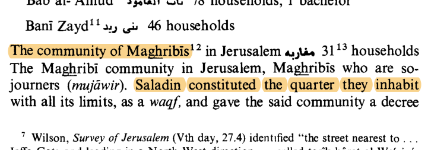 | ||||||
| 02 | 13th c., sedimentedFossilized labels |
Mamluk-era ethnic quarters
Quarter-names recording Kurdish, Turcoman, Bashkir and Egyptian Mamluk-era plantings survived in Ramla, Gaza, Safed and Hebron — but by the sixteenth century these were sedimented local populations, fossilized labels rather than active in-migration. |
— no substantial 16th-c. influx; sedimented residue | Ordinary subjects reaya; no special grant (sedimented residue) | Ramla · Gaza · Safed · Hebron ethnic quarter-toponyms | Defter Secondary |
Lewis & Cohen (1978), p. 34 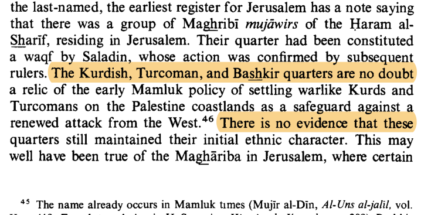 | ||||||
| 03 | 16th c.Mamluk garrison |
Mamluk jundī veterans
Retired Mamluk soldiery — the mutekāʿid of the registers — remained very substantially represented in Gaza, Jerusalem and Safed for some eighty years after the 1517 Ottoman conquest: a sedentarizing garrison residue of the previous regime. |
Substantial garrison residue, esp. Gaza; ~80 yrs post-1517 | Military pension mutekāʾid — retired askerī fiscal status | Gaza · Jerusalem · Safed former Mamluk garrison towns | Defter |
Lewis & Cohen (1978), p. 34 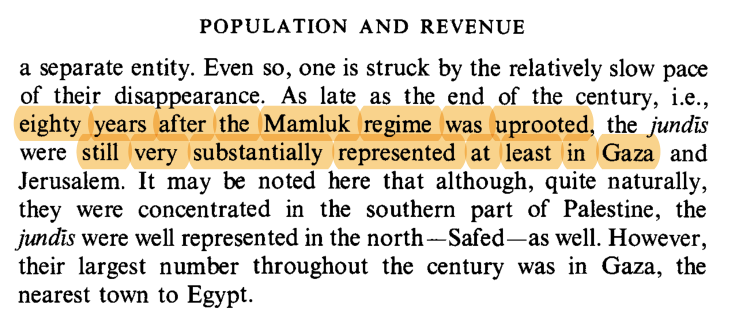 | ||||||
| 04 | 16th–17th c.Bedouin sedentarization |
Ṭarabāy sedentarizing bedouin
The Ṭarabāy clan, holding sanjaq appointments over the Lajjun district, sedentarized from a bedouin band into a settled, tax-holding presence across the Acre plain and the Marj Ibn ʿĀmir (Jezreel valley). |
Clan-scale tribal band sedentarizing into villages | Sanjaq appointment clan granted tax authority over the Lajjun district | Acre plain · Marj Ibn ʿĀmir Lajjun sanjaq | Defter Sijill |
Ze'evi, An Ottoman Century (1996), p. 42 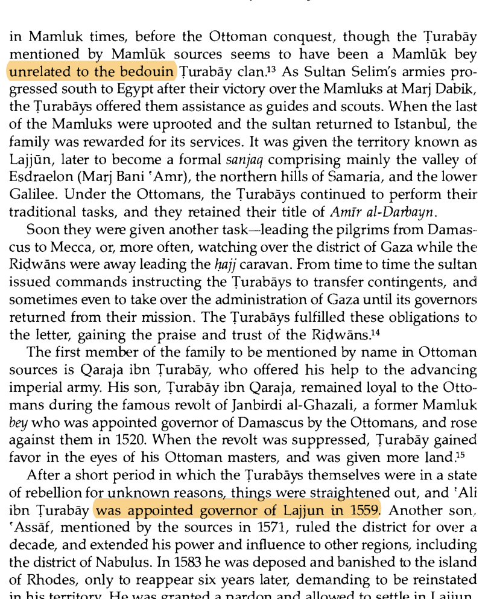 | ||||||
| 05 | c.1562–1640sCircassian household |
Farrukh dynasty
A Circassian-Mamluk household that rose to dominate the Jerusalem sanjaq across several generations — an elite military lineage drawn through the Caucasus-to-Mamluk pipeline. Thinly attested · single court-record series |
~50–100 + deps elite military household | Provincial office askerī household holding the Jerusalem sanjaq | Jerusalem district sanjaq administration | Sijill |
Ze'evi (1996), p. 43 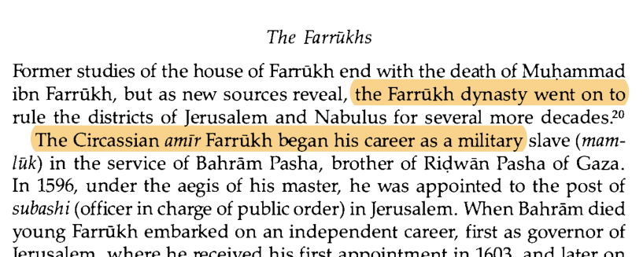 | ||||||
| 06 | 16th–17th c.Maʿnid expansion |
Druze under Fakhr al-Dīn
Under the Maʿnid amir Fakhr al-Dīn II, Druze settlement pressed briefly onto Mount Carmel from its Mount-Lebanon and Hauran heartland — a village-scale, largely peripheral intrusion into Palestine's north. |
Village-scale peripheral; mostly Hauran, Carmel briefly | Tax-farm (iltizām) Maʿnid amirate over the region | Mount Carmel (briefly) from Mt Lebanon / Hauran | Defter Secondary |
Firro, A History of the Druzes (1992), p. 42 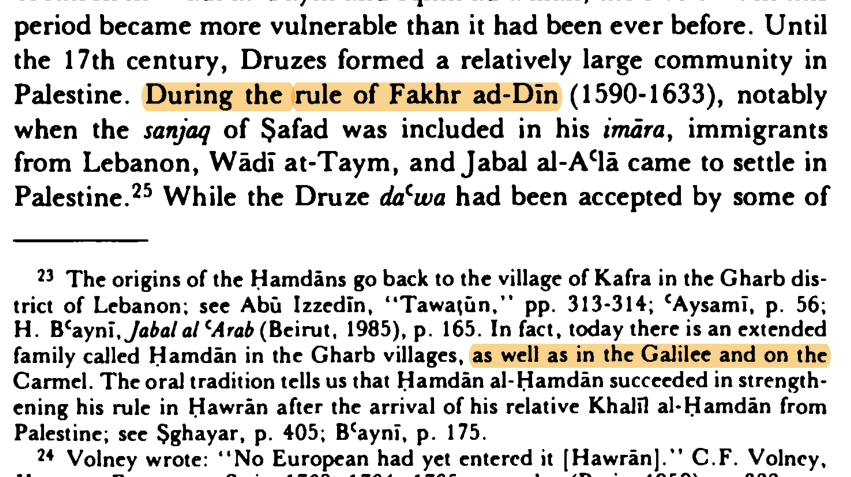 | ||||||
| Late Ottoman-classical & Pasha-cascade 1700 – 1882 | ||||||
| 07 | late 17th c.+Pastoral frontier |
ʿAnaza bedouin expansion
Westward pastoral-nomadic expansion of the ʿAnaza tribal confederation out of the Syrian desert onto the Hauran plateau and the eastern Galilee grazing frontier — a seasonal-then-settled presence on the steppe margin rather than a directed resettlement. Seetzen, travelling in 1805–07, recorded the ʿAnaza as the largest tribe of the region. |
— pastoral confederation; Palestine presence not censused | Outside land tenure nomadic grazing; no land grant | Hauran & eastern Galilee frontier Golan margins · Bet She'an / Jordan valley grazing grounds | Consular Secondary |
Seetzen, Reisen durch Syrien, Palästina… (1854), p. 47 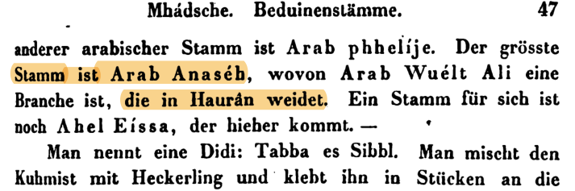 | ||||||
| 08 | 1700–1776Autonomous Galilee |
Zaydani consolidation (Ẓāhir al-ʿUmar)
The rise of the autonomous Zaydani sheikhdom under Ẓāhir al-ʿUmar al-Zaydānī drew merchants, soldiery and Maghribi traders into a fortifying Galilee built on the cotton-and-grain trade with Marseille. Tiberias, Acre, Safad and Nazareth were rebuilt and repopulated under his rule. |
— state consolidation; attached in-migration not quantified | Tax-farm (iltizām) autonomous multazim ruling family | Galilee Tiberias · Acre · Safad · Nazareth · Shefaʿamr | Chronicle Consular |
A. Cohen, Palestine in the 18th Century (1973), p. 132 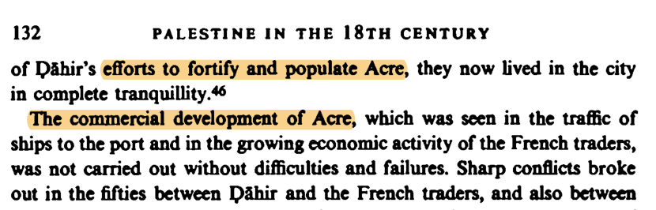 | ||||||
| 09 | 1776–1804Acre pashalik |
Al-Jazzār's Acre household & garrison
Aḥmad Pasha al-Jazzār, a Bosnian-born mamluk, governed Acre with an imported household of Caucasian and Balkan mamluks and a standing force of North-African and Anatolian troops — fixing a polyglot garrison population on the northern coast. |
Low thousands standing garrison & mamluk household (estimate) | Ottoman governor wālī of Sidon / Acre; state office | Acre & coastal Galilee ʿAkkā citadel & environs · coastal garrison towns | Chronicle Consular |
A. Cohen (1973), p. 284 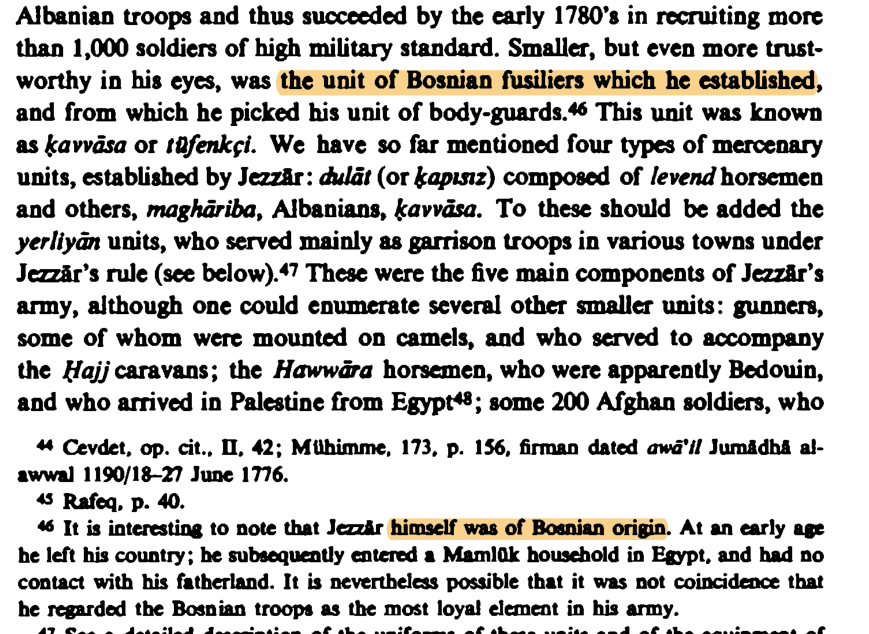 | ||||||
| 10 | 18th c.Garrison labour |
Maghribi, Dalātiyya & Lawand mercenary units
Recurrent recruitment of Maghribi, Dalātiyya and Lawand mercenary companies by Galilee and Acre rulers across the century settled bands of soldiery — many of Maghrebi and Anatolian origin — into the coastal towns they garrisoned. |
Hundreds– low thousands mercenary companies, cumulative over the century |
Paid soldiery wages & quartering; no land grant | Galilee & Acre garrisons Acre · Tiberias · Safad fortified towns | Chronicle Consular |
A. Cohen (1973), p. 284 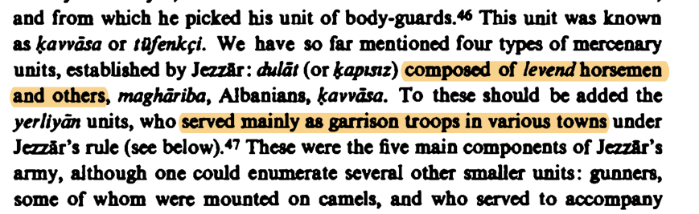 | ||||||
| 11 | 1831–1840Egyptian occupation |
Egyptian fellahin & soldiery (Ibrāhīm Pasha)
Ibrāhīm Pasha's occupation of Bilād al-Shām under Mehmed Ali of Egypt brought Egyptian fellahin, soldiers and labourers into the coastal plain; many remained after the 1840 withdrawal. Egyptian-origin family names persisted in roughly 50 villages and in the Jaffa quarters of Manshiyya and Abū Kabīr. |
~50 villages with family-name retention; total population figure contested | Miri-land settlement no muhajir package; regularised as Ottoman subjects after 1840 | Coastal plain Jaffa (Manshiyya, Abū Kabīr) · Sharon villages · al-Jūra (Gaza coast) | Chronicle Census Archival |
Grossman, Rural Arab Demography (2011), p. 52 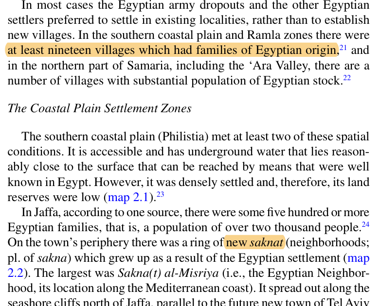 | ||||||
| 12 | 1850s–1860sPost-1830 Maghreb |
Algerian Maghribis (ʿAbd al-Qādir's followers)
Algerian followers of ʿAbd al-Qādir al-Jazāʾirī, displaced by the French conquest of Algeria and the 1860 Mount Lebanon war, settled in Galilee villages, on Mount Carmel, and in Jerusalem's centuries-old Maghariba Quarter. |
Several thousand in the Galilee alone (Schölch) |
Refugees / French protégés many claimed French-subject status (post-1830 Algeria); settled in villages | Galilee · Mt Carmel · Jerusalem Galilee villages · Mount Carmel · Maghariba Quarter (Jerusalem) | Chronicle Sijill |
Schölch, Palestine in Transformation 1856–1882 (1993), p. 156 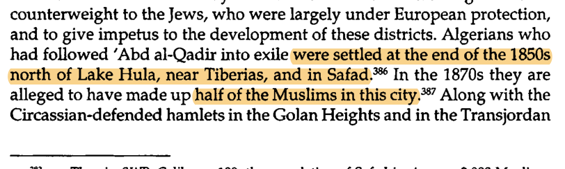 | ||||||
| Late Ottoman / early Mandate 1860 – 1917 | ||||||
| 13 | 1860+1860 Lebanon war |
Druze refugees from Mount Lebanon
Druze fleeing the 1860 sectarian war in Mount Lebanon reinforced existing Druze villages on Mount Carmel and in the western Galilee — absorbed into the established Carmel-area communities. |
A few thousand reinforcing existing Carmel / Galilee villages |
Ottoman subjects absorbed into existing Druze villages | Mt Carmel & western Galilee ʿUsfiya · Daliyat al-Karmel · western Galilee villages | Consular Secondary |
Grossman (2011), p. 143 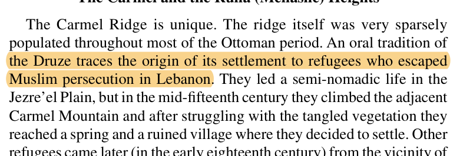 | ||||||
| 14 | 1864–1880sCaucasus exodus |
Circassian muhājirūn
Muslim refugees of the Russian conquest of the Caucasus, resettled by the Ottoman Refugee Commission (Muhacirin Komisyonu) under its iskān programme of land, tax exemption and tools. The largest of the Caucasus streams in Palestine, founding Kfar Kama, Reihaniya and the coastal village at Qisarya. |
≈10–15k* combined Caucasus & Balkan muhājirūn in Palestine — Circassians the largest share | Muhajir iskān package free miri/mawat land · ~25-yr conscription exemption · tax holiday · stipend · tools · citizenship | Lower & Upper Galilee · coast Kfar Kama · Reihaniya · Qisarya (Caesarea) | Census Archival |
Hamed-Troyansky, Empire of Refugees (2024), p. 122 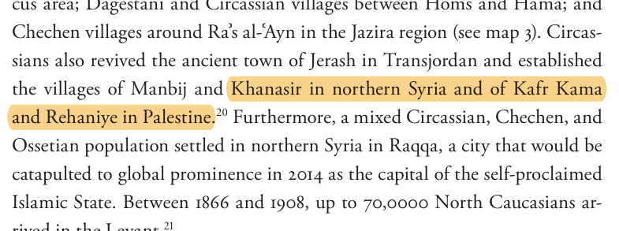 | ||||||
| 15 | 1864–1880sCaucasus exodus |
Chechen & Ingush muhājirūn
Part of the same 1864 Caucasus exodus; Chechen and Ingush refugees were settled by the Refugee Commission across the northern frontier — a smaller and more dispersed stream than the Circassian cohort, documented in the Ottoman resettlement archive. |
— part of the combined * total; small, dispersed | Muhajir iskān package same Refugee-Commission terms | Northern Galilee frontier scattered Galilee resettlement (larger sister-settlements in Transjordan) | Archival Secondary |
Hamed-Troyansky (2024), p. 122 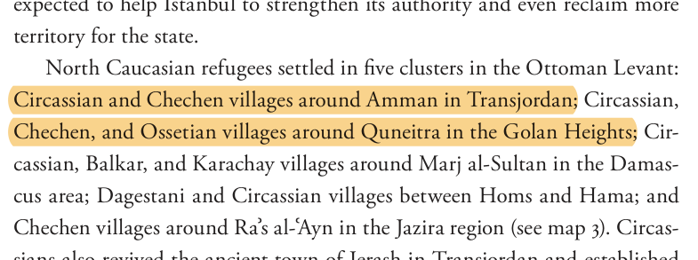 | ||||||
| 16 | post-1878Balkan muhājirūn |
Bosnian muhājirūn
Bosnian Muslims emigrating after the 1878 Habsburg occupation of Bosnia were resettled by the Ottoman state across its territories — part of a wider movement of some 150,000 Bosnian Muslims (1881–1911). In Palestine they refounded the coastal village at Qisarya (Caesarea). |
One village Qisarya; a few hundred (part of the combined * total) | Muhajir iskān package settled on mawat ruins (Qisarya); same terms | Coast Qisarya (Caesarea) | Census Archival |
Hamed-Troyansky (2024), p. 65 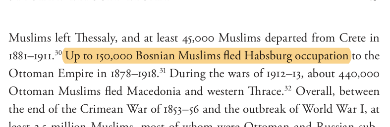 | ||||||
| 17 | late 19th c.Pastoral settlement |
Turkmen & Kurdish settlers
Turkmen and Kurdish pastoralist-cultivators settled the Ruha heights and the northern Samaria / Marj Ibn ʿĀmir margins in the later nineteenth century. Thinly attested · secondary synthesis only |
— not quantified in the record | Tapu settlement sedentarised onto state land | Northern Samaria Ruha heights · Marj Ibn ʿĀmir (Jezreel) margins | Secondary |
Grossman (2011), p. 63 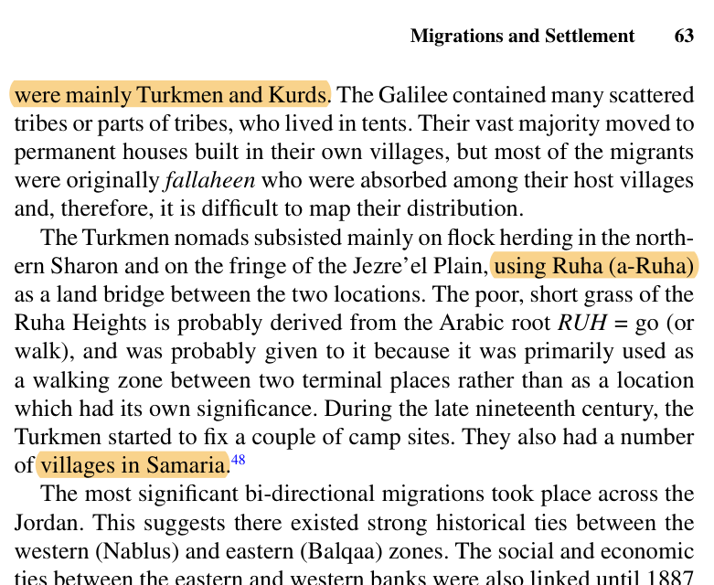 | ||||||
| 18 | late 19th– early 20th c.Pilgrim residue |
Indian Muslim pilgrim residue
A small residual community of Indian Muslims — pilgrims and Sufi devotees who remained after the Hajj — clustered around the Indian Hospice in the Old City of Jerusalem. Thinly attested · suggestive, secondary only |
Dozens– low hundreds small residual community (estimate) |
British protégés Capitulation protection; pilgrim residue | Jerusalem (Old City) Indian Hospice · Bāb al-Zāhira quarter | Secondary |
Büssow, Hamidian Palestine (2011), p. 441 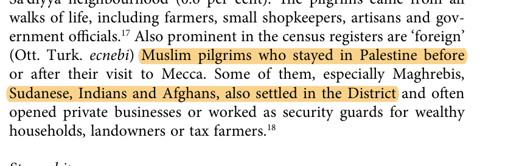 | ||||||
* The Circassian, Chechen and Bosnian muhājirūn together account for an estimated 10,000–15,000 of the Palestine resettlement (Hamed-Troyansky, drawing on the Ottoman Refugee Commission archive). The total is not cleanly separable by group; the Circassians were the largest share.
18 cohorts · ordered by approximate start date · 3 flagged as thinly attested
This is a descriptive ledger, not an argument, covering the full Ottoman period. Each row records a distinct stream of Muslim settlement into Palestine, ordered by approximate start date and grouped into three eras. The source-tradition tags indicate the kind of primary evidence behind each entry — fiscal registers (defter), court records (sijill), Arabic narrative chronicles, European consular and travellers' accounts, Ottoman and Mandate census material, and state-archive holdings such as the Ottoman Refugee Commission (Muhacirin Komisyonu) records. Where an entry rests only on modern synthesis it carries a Secondary tag; three cohorts are additionally flagged as thinly attested.
The classical centuries (1516–1700) are largely sedentarization, not mass flow. The Maghariba grew as a distinct community, but the Mamluk-era ethnic quarters were fossilized labels — local populations by 1525, not active in-migration — and the jundī veterans and Ṭarabāy clan were the previous regime's military residue settling down. The first mass flows on the Muslim side open with the Egyptians under Ibrāhīm Pasha (1831) and the mid-century refugee resettlements — the same Tanzimat-era rupture as the Old Yishuv's protected immigration (1838–82) and the Aliyot on the companion sheet.
Population figures are order-of-magnitude only, and several — the Mandate-cusp Caucasus totals above all — are contested in the historiography; the pre-census cohorts (tribal expansion, the eighteenth-century garrisons) were never counted and are marked not quantified. The window opens at 1516 with the Ottoman conquest and closes at 1917 with the end of Ottoman rule.
Drawn from · Hütteroth & Abdulfattah, Historical Geography of Palestine (1977) · Lewis & Cohen, Population and Revenue in the Towns of Palestine (1978) · Ze'evi, An Ottoman Century (1996) · Rafeq on the eighteenth-century Damascene chronicles · Seetzen, Reisen durch Syrien, Palästina… (1854) · Schölch, Palestine in Transformation 1856–1882 (1993) · Grossman, Rural Arab Demography (2011) · Hamed-Troyansky, Empire of Refugees (2024) · Lemire, Au pied du Mur (2022) · Mills, Census of Palestine 1931 · Survey of Palestine 1945–46.